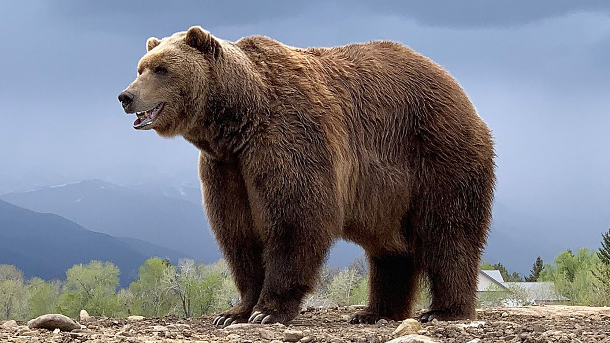
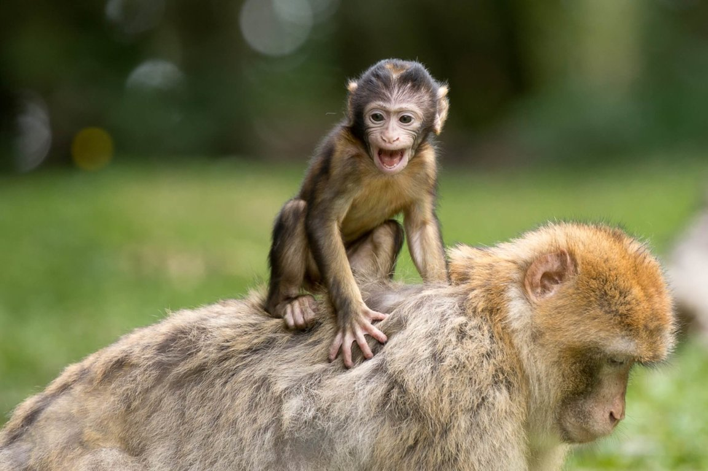

Bears
Bears are carnivoran mammals of the family Ursidae. They are classified as caniforms, or doglike carnivorans. Although only eight species of bears are extant, they are widespread, appearing in a wide variety of habitats throughout most of the Northern Hemisphere and partially in the Southern Hemisphere.
- Ollie
- Mona
Giraffes

The giraffe is a large African hoofed mammal belonging to the genus Giraffa. It is the tallest living terrestrial animal and the largest ruminant on Earth.
- Frankie
- Coconut
Lions

The lion is a large cat of the genus Panthera, native to Africa and India. It has a muscular, broad-chested body; a short, rounded head; round ears; and a dark, hairy tuft at the tip of its tail.
- Mella
- Karl
Monkeys
Monkey is a common name that may refer to most mammals of the infraorder Simiiformes, also known as simians. Traditionally, all animals in the group now known as simians are counted as monkeys except the apes.
- Cookie
- Earl
- Banana Pudding
Alligators

An alligator, or colloquially gator, is a large reptile in the genus Alligator of the family Alligatoridae in the order Crocodilia.
- Wren
- Aspen
- Mika